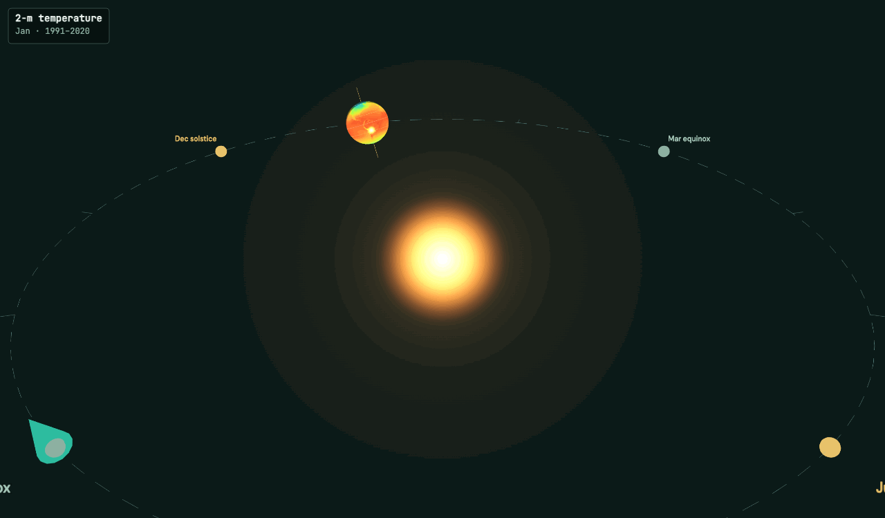
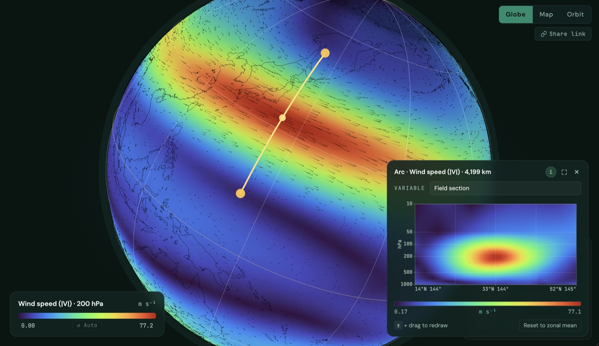
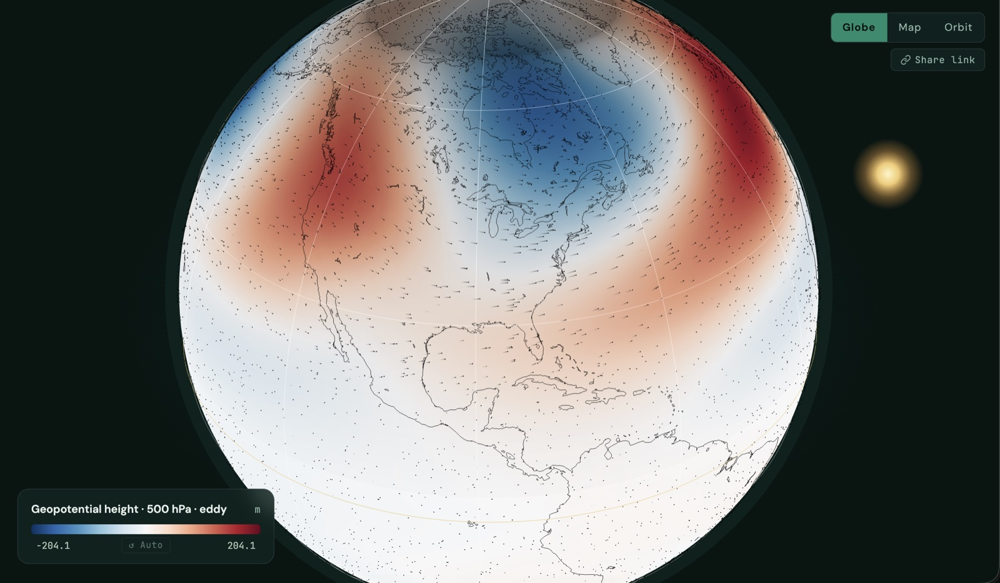
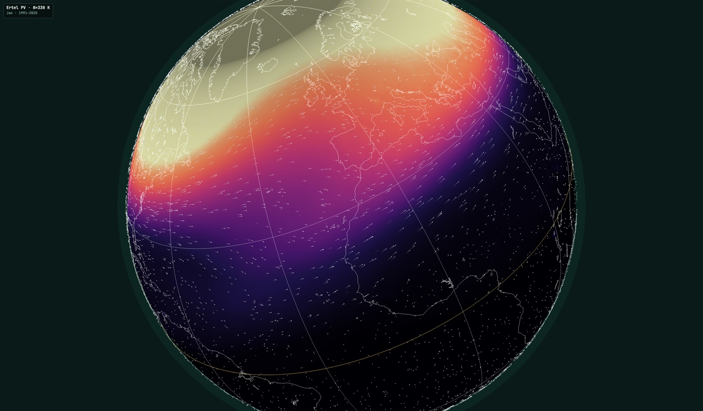
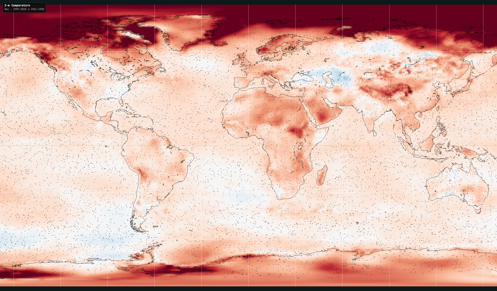
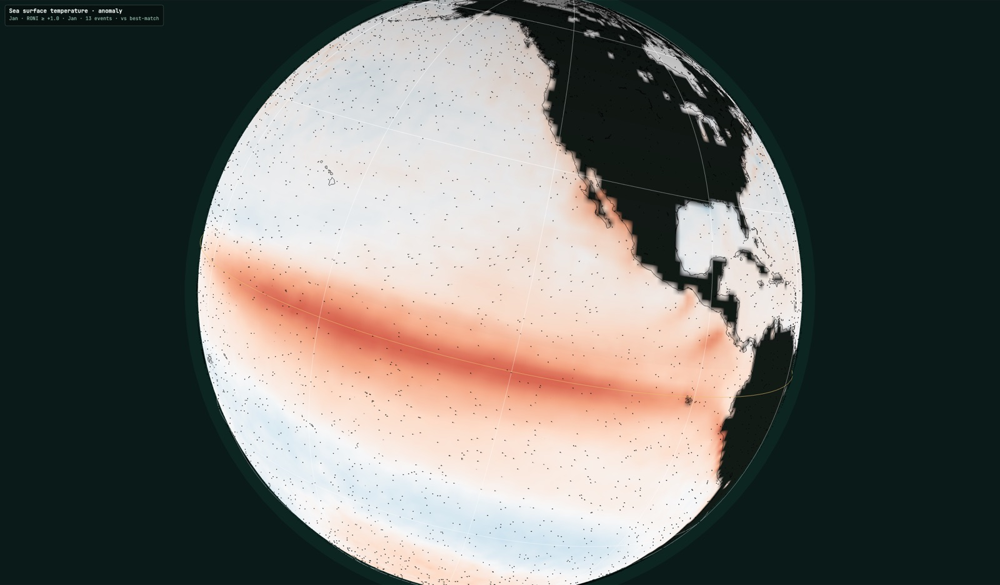
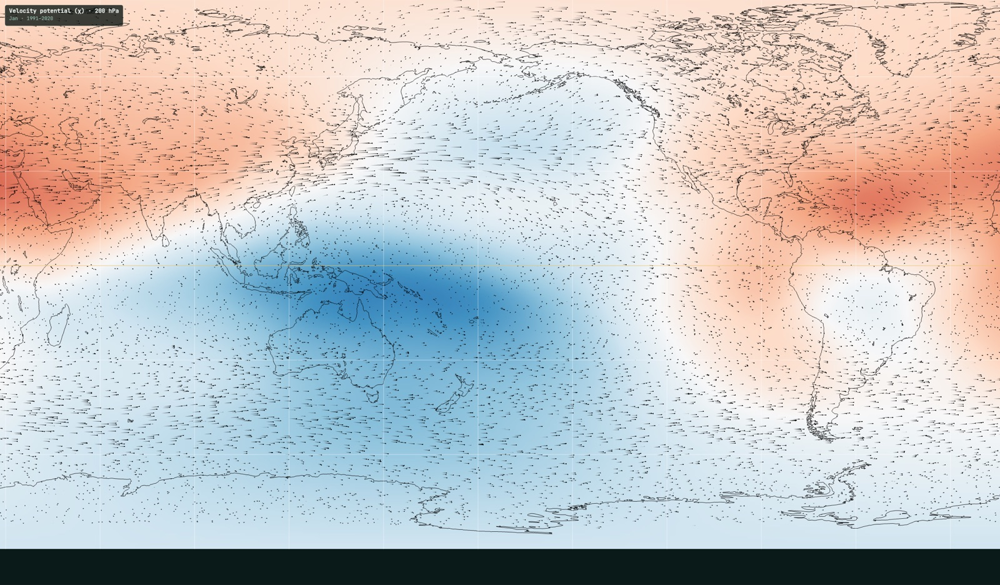
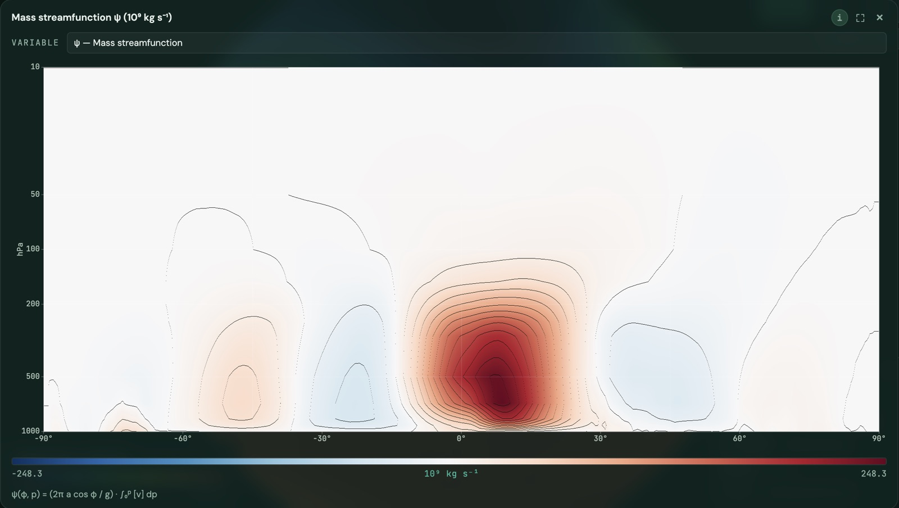

Nine views of the base state.
Each tile opens the atlas at a pre-configured view — field, level, month, decomposition, cross-section, all set. Every knob from there is still yours. Replace the thumbnails with your own by dropping screenshots into assets/gallery/.









Daily-Data Transients
Storm-track bandpass variance (z500, v850), transient EP flux, transient Lorenz cycle, and daily-ERA5 MJO / ENSO / NAO composites. Gated on a 50–80 GB daily-reanalysis pull + one pipeline pass.
Model & Observation Overlays
Swap ERA5 for CMIP6 historical or SSP585 end-of-century. Overlay observations (GPCP, CERES, OISST, ASCAT). Held-Suarez + PMIP paleoclimate runs for context — everything through the same renderer.
Guided Tours
Authored walkthroughs where the globe narrates itself — rotates, zooms, toggles fields, shifts months, paints a diagnostic, then moves on. "The Hadley cell," "monsoon reversal," "why is the Aleutian Low there?"